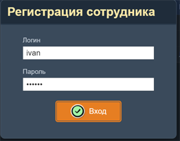

Веб-приложение «Компаньон»
Приложение Компаньон предназначено для автоматизации складского учёта, документооборота и управления взаимоотношениями с контрагентами. Это веб-сервис, который работает в любом современном браузере, в том числе на мобильных устройствах.
Приложение обеспечивает полный цикл учёта товаров и услуг: поступление, перемещение, продажа, прокат, ремонт, контроль остатков. А также ведение контрагентов, счетов, договоров, актов, операций с деньгами и печать всех необходимых документов.

Основное окно приложения с главным меню и таблицей документов. Щёлкните чтобы увеличить.
Демо-версию приложения можно посмотреть по адресу ваш-сервер/comp. При входе необходимо зарегистрироваться, указав логин и пароль, выданные администратором.

Окно регистрации при входе в приложение.
Основные возможности
- Складской учёт — поступление, продажа, возврат, перемещение, списание товаров, контроль остатков на складах.
- Документооборот — счета, накладные, приходные/расходные ордера, коммерческие предложения, договора проката, акты ремонта.
- Контрагенты — ведение базы клиентов и поставщиков, учет всех контактов, история взаимоотношений.
- Финансы — кассовая книга, все операции с деньгаами, контроль взаиморасчётов.
- Товары и услуги — номенклатура, категории, группы, подгруппы, производители, единицы измерения.
- Справочники — города, страны, типы контактов, статусы — всё, что нужно для ведения учёта.
- Печать документов — формирование печатных форм счетов, накладных, актов и других документов на базе настраиваемых шаблонов. Возможность добавления новых видов печатных документов.
- Экспорт данных — выгрузка таблиц в CSV, Excel и HTML для дальнейшего анализа.
- Разграничение прав доступа — гибкая настройка прав сотрудников на просмотр, добавление, изменение и удаление записей.
Содержание документации
- Интерфейс и основные способы работы с приложением — главное меню, работа с таблицами и формами, клавиатурные сокращения, права доступа.
- Склад — приход, продажа, возвраты, внутреннее перемещение, списание товаров.
- Аренда — договоры аренды, тарифы, выдача и возврат товаров, оплата и залоги.
- Номенклатура — товары, услуги, категории, группы, производители, единицы измерения.
- Контрагенты — клиенты и поставщики, контакты, категории, виды деятельности.
- Документы и финансы — счета, коммерческие предложения, кассовая книга, виды операций с деньгами.
- Справочники — города, страны, участки, фирмы, состояния заявок, виды рекламы.
- Администрирование — сотрудники, роли, права доступа, настройка документов.
Для кого предназначено
Приложение подойдёт небольшим и средним компаниям, ведущим складской учёт и документооборот: оптовым и розничным торговцам, сервисным организациям, производственным предприятиям. Компаньон помогает систематизировать учёт, снизить количество ошибок и ускорить работу сотрудников.